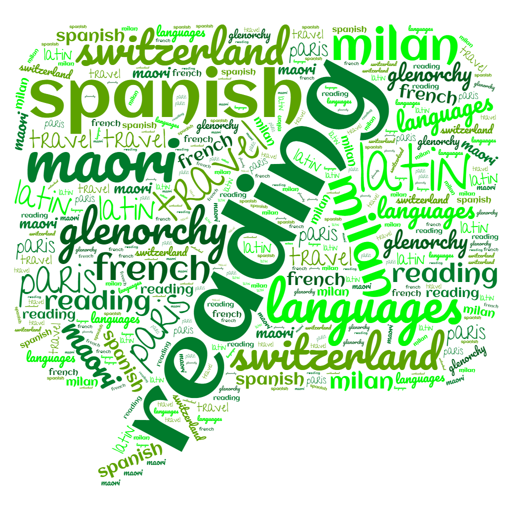

An Introduction About Myself
Hi, my name is Ann Maria. I am 17 years old and I am from Cochin, India. I am currently taking a Diploma in Infocomm Security Management at Singapore Polytechnic (SP). I chose to take this diploma as I have always aspired to pursue a career in digital security. I look forward to entering this industry at the end of my 3-year course
My core values are honesty, courage and compassion. I believe being kind is always more important than being right which is why compassion is one of my values. As for courage being my second core value, I want to always have the courage to experience new places and environments although they may seem daunting. Lastly, I have learnt from previous experiences that honesty is essential in any relationship therefore it is my most prioritised core value.
My interests include travelling, foreign languages and reading. I enjoy travelling to different countries and getting a first-hand experience of the culture and traditions there. Naturally, because I enjoy travelling, I have learnt to appreciate foreign languages and the different accents around the world. However, I enjoy reading the most. I love to spend my free time reading books from different genres and trying to understand the story from different perspectives.
I am mostly an introverted person. I prefer to avoid crowds and I am usually reluctant to interact with unfamiliar people. However, when it comes to my family and close friends, I am a lot more outgoing and extroverted. Secondly, I am more intuitive than observant. I am very imaginative and open-minded and I do not like to be constantly surrounded by hard facts. My third personality trait is prospectiveness. When faced with unexpected challenges, I am able to adapt and find a solution as I go along.